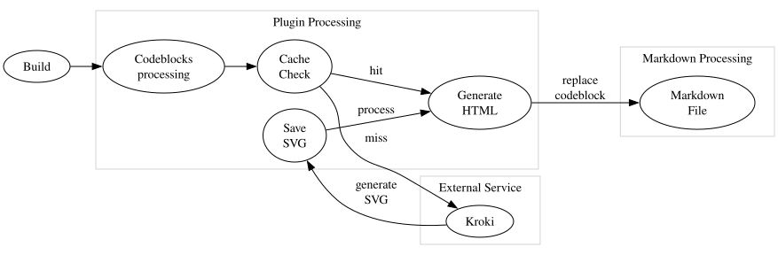

| English | Español | 中文 | Українська | Русский |
A VitePress plugin that adds support for various diagram types using the Kroki service. The plugin automatically converts diagram code blocks into SVG images, caches them locally, and provides a clean, customizable display with optional captions.
Using an external service requires an internet connection during build, but it offers significant advantages over creating an image on the client (huge bundle and performance drop) and over creating an image on the server (complexity - mermaid requires puppeteer for this, for example).
The diagrams are meant to be generated at DEV time because:
The
vitepress-plugin-diagramsCLI that comes bundled with this package can be used in a CI to check for missing diagrams or outdated ones. There is also a pre-commit hook available (see pre-commit section).
VS Code with Mermaid extension)@file: syntax
pnpm add -D vitepress-plugin-diagrams
.vitepress/config.ts):import { defineConfig } from "vitepress";
import { configureDiagramsPlugin } from "vitepress-plugin-diagrams";
export default defineConfig({
markdown: {
config: (md) => {
configureDiagramsPlugin(md, {
diagramsDir: "docs/public/diagrams", // Optional: custom directory for SVG files
publicPath: "/diagrams", // Optional: custom public path for images
krokiServerUrl: "https://kroki.io", // Optional: custom Kroki server URL
excludedDiagramTypes: ["mermaid"], // Optional: exclude specific diagram types
});
},
},
});
```mermaid
graph TD
A[Start] --> B{Decision}
B -->|Yes| C[OK]
B -->|No| D[Cancel]
```
<!-- diagram id="1" caption: "System Design Flow" -->
The diagram metadata feature provides additional context and identification. You can add metadata to your diagrams using special HTML comments.
<!-- diagram id="1" caption: "System Design Flow" -->
Note on identifiers:
id, the plugin automatically derives a stable, position-based identifier (positionId) from the markdown file name and the code block index. This keeps filenames stable across rebuilds unless the diagram moves within the file.id nor position can be used, the filename falls back to a content hash-only form.You can import diagram definitions from external files using the @file: syntax. This is useful for:
```bpmn
@file:./diagrams/process.bpmn
```
<!-- diagram id="1" caption: "Business Process" -->
The path is resolved relative to the markdown file containing the import.
@file:./diagrams/test.bpmn or @file:../shared/test.mmd@file:/absolute/path/to/diagram.pumlControl file import behavior with these plugin options:
configureDiagramsPlugin(md, {
// Enable/disable file imports (default: true)
enableFileImports: true,
// Restrict imports to specific directories for security (optional)
allowedImportDirs: [
'./docs/diagrams',
'./shared/diagrams'
],
});
When allowedImportDirs is specified, only files within those directories can be imported. This prevents accidental or malicious access to sensitive files outside your documentation structure.
If a file cannot be read (missing, permission denied, etc.), an error message will be displayed in place of the diagram:
Error loading diagram file: Failed to read file import: ENOENT: no such file or directory...
Mermaid, PlantUML, GraphViz, BlockDiag, BPMN, Bytefield, SeqDiag, ActDiag, NwDiag, PacketDiag, RackDiag, C4 (with PlantUML), D2, DBML, Ditaa, Erd, Excalidraw, Nomnoml, Pikchr, Structurizr, Svgbob, Symbolator, TikZ, UMlet, Vega, Vega-Lite, WaveDrom, WireViz
View full list of supported diagrams →
| Option | Type | Default | Description |
|---|---|---|---|
diagramsDir |
string |
"docs/public/diagrams" |
Directory where SVG files will be stored |
publicPath |
string |
"/diagrams" |
Public path for accessing the SVG files |
krokiServerUrl |
string |
"https://kroki.io" |
Kroki server URL for diagram generation |
excludedDiagramTypes |
DiagramType[] |
[] |
Diagram types to exclude; these code blocks render as normal code |
enableFileImports |
boolean |
true |
Enable/disable file import syntax (@file:) |
allowedImportDirs |
string[] |
undefined |
Restrict file imports to specific directories (security) |
<figure class="vpd-diagram vpd-diagram--[diagramType]">
<img
src="[publicPath]/[diagramType]-[identifier]-[hash].svg"
alt="[diagramType] Diagram"
class="vpd-diagram-image"
/>
<figcaption class="vpd-diagram-caption">
[caption]
</figcaption>
</figure>
You can customize the CSS classes to match your theme.
id: [diagramType]-[id]-[hash].svg[diagramType]-[positionId]-[hash].svg[diagramType]-[hash].svgid, previous files with the same diagramType and id are removed.positionId, previous files with the same diagramType and positionId are removed.[diagramType]-[otherHash].svg files are removed when content changes.When updating a diagram, you may see a placeholder image on the browser page. This is normal, because the svg file is loaded asynchronously and may not be displayed immediately. Just refresh the page.
Add this to your .pre-commit-config.yaml:
- repo: https://github.com/vuesence/vitepress-plugin-diagrams
rev: "main"
hooks:
- id: check-missing-diagrams
- id: clean-diagrams
MIT
Contributions are welcome! Before submitting a Pull Request, please open an issue first to discuss proposed changes.
This plugin uses the Kroki service for diagram generation.